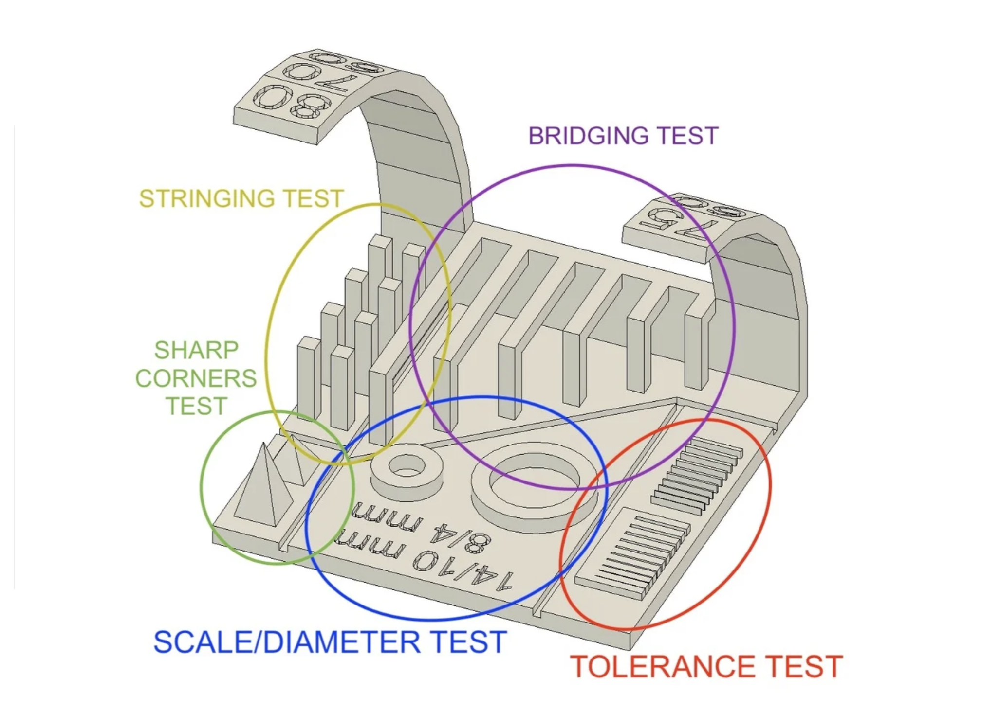
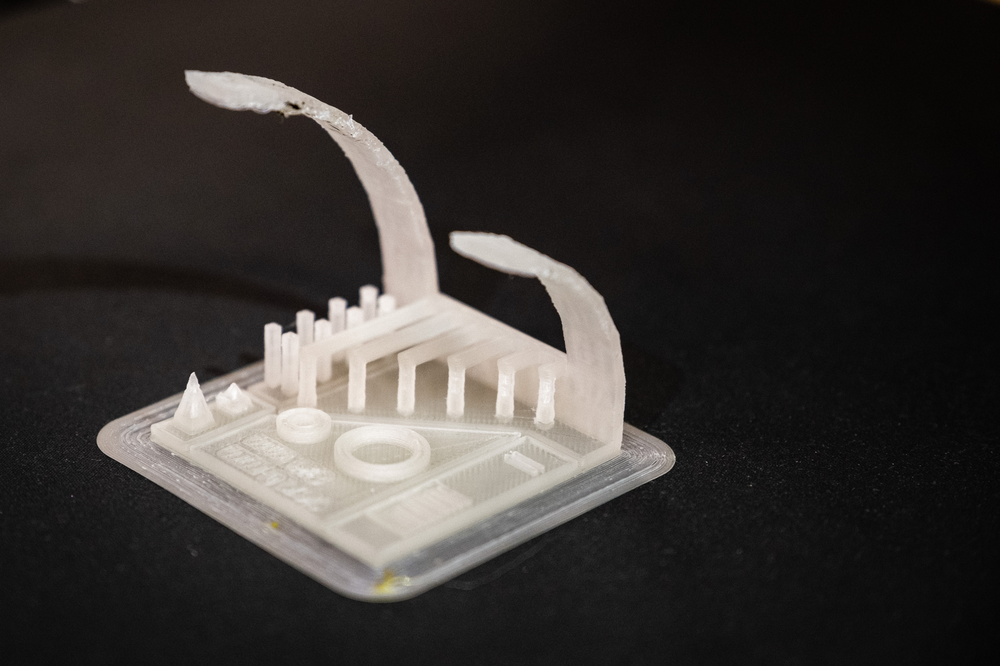

Verkefni 3 - Þrívíddarprófun
Verkefnið snerist um að ákvarða hönnunar reglur og þvinganir í þrívíddarprentun. Verkefnið var unnið af Baldri Björnssyni, Kristófer Bjarma Scram og Kristófer Þorgrímssyni.
Ákveðið var að nota tilbúin hlut sem bent var á í fyrirlestri. Teikningu af hlutnum má finna hér á vefsíðunni thingiverse. Markmiðið er að prófa nákvæmni þrívíddarprentunar. Mynd af hlutnum á sjá hér að neðan. Hann er bæði lítill og léttur en prófar samt sem áður marga þætti í prentun.
Til þesss að prenta út hlutinn var STL skránni hlaðið niður og hún opnuð í Ultimaker Cura. Eftir prentun mátti sjá að yfirhangandi bitarnir voru orðnir óreglulegir þegar komið var lengra en 60 gráður. Einnig voru ekki skörp skil milli þunnra lína og því ljóst að prentarinn réði illa við að prenta smáatriði.


